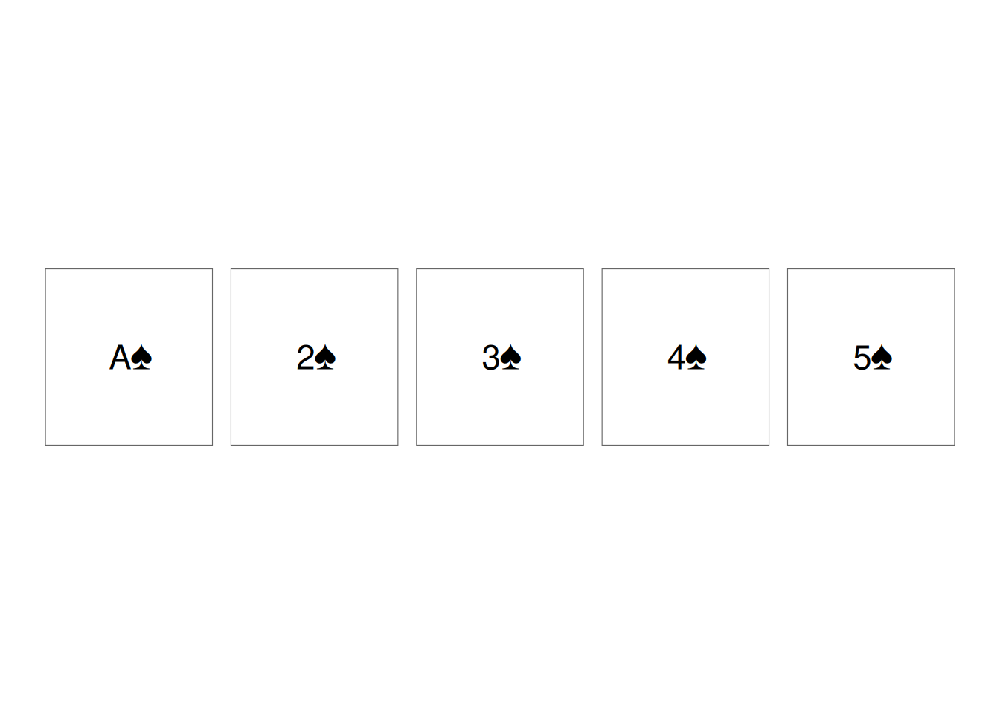
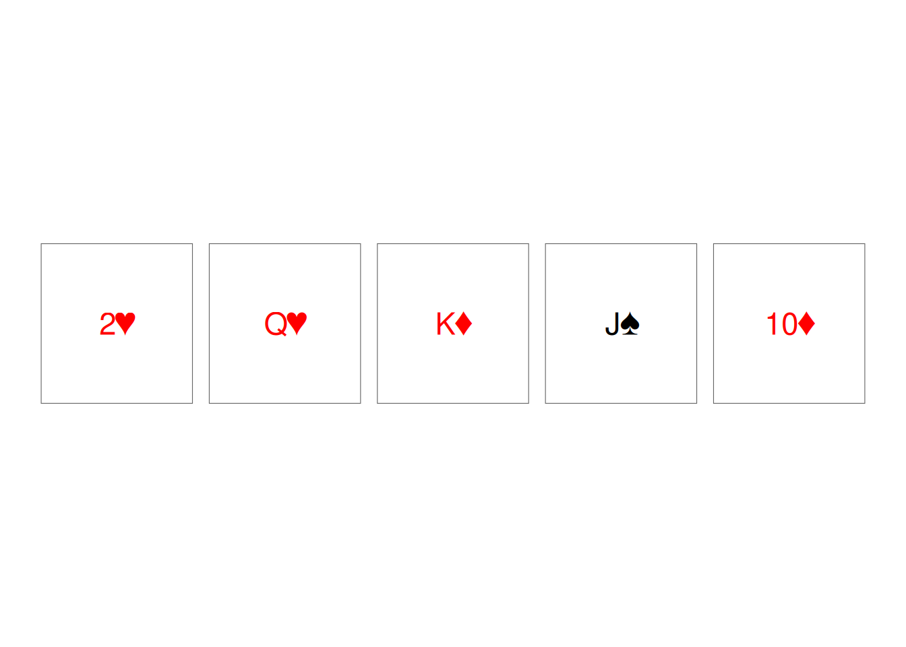

rlab_lm <- function(data, response, ...) {
pred <- list(...)
termlabels <- paste0(unlist(pred), collapse = " + ")
fm <- as.formula(reformulate(termlabels, response))
fit <- lm(fm, data = data)
class(fit) <- c("rlab_lm", class(fit))
return(fit)
}
print.rlab_lm <- function(object, digits = 2, ...) {
model_summary <- summary.lm(object)
estimates <- round(coef(object), digits)
intercept <- estimates["(Intercept)"]
betas <- estimates[names(estimates) != "(Intercept)"]
beta_labels <- paste0(names(betas), ": ", unname(betas))
cat("Linear Regression Model\n")
cat("-----------------------\n")
cat("Intercept:", unname(intercept), "\n")
cat("Coefficients:", paste(beta_labels, collapse = ", "), "\n")
cat("R-squared:", round(model_summary$r.squared, digits), "\n")
cat("Sample size:", nobs(object), "\n")
invisible(object)
}
summary.rlab_lm <- function(object, digits = 2, ...) {
estimates <- round(coef(object), digits)
model_summary <- summary.lm(object)
out <- as.data.frame(t(estimates))
out$r_squared <- round(model_summary$r.squared, digits)
out$n <- nobs(object)
out
}Object-Oriented Programming
Functionals, Function Factories, and Function Operators
Assignment. Practice functional (S3) and encapsulated (R6) object-oriented programming.
S3 Objective: Practice creating S3 classes and defining class-specific methods for generic functions. Using the mtcars dataset, fit a linear regression model predicting mpg from wt, cyl, and hp. Assign the model a custom class called rlab_lm, while retaining its existing “lm” class.
Implement the following methods:
- print.rlab_lm() — Print a concise summary of the model that includes:
- The intercept
- The beta coefficients for each predictor
- The model’s (R2)
- The sample size Round numerical results to two decimal places by default.
- summary.rlab_lm() — Return a data frame containing the coefficient names, estimates, (R2), and sample size.
Requirements:
- Use S3 method naming conventions.
- Use class() to assign the custom class.
- Ensure that both methods work when called through the generic functions print() and summary().
- Avoid recursive calls between your custom methods and the generic functions.
Challenge: Modify the print method to allow users to control the number of decimal places with a digits argument.
print(rlab_lm(mtcars, response = "mpg", "wt", "cyl", "hp"), digits = 5)Linear Regression Model
-----------------------
Intercept: 38.75179
Coefficients: wt: -3.16697, cyl: -0.94162, hp: -0.01804
R-squared: 0.84315
Sample size: 32 summary(rlab_lm(mtcars, response = "mpg", "wt", "cyl", "hp"), digits = 2) (Intercept) wt cyl hp r_squared n
1 38.75 -3.17 -0.94 -0.02 0.84 32R6 Objective. In this activity you’ll build a virtual deck of playing cards using R6. You’ll start with a plain vector of 52 cards, then wrap it in an R6 class so you can write deck$shuffle() and deck$draw(5) the way you’d use a real deck. By the end, you’ll know how to:
- Define a class with R6Class()
- Store data in a field and write methods that use it
- Use self to refer to the object’s own data
- Chain methods together (
deck$shuffle()$draw(5))
Deck <- R6::R6Class(
"Deck",
public = list(
cards = NULL,
initialize = function() {
suits <- c("♠", "♥", "♦", "♣")
values <- c("A", 2:10, "J", "Q", "K")
self$cards <- paste0(rep(values, times = 4), rep(suits, each = 13))
},
shuffle = function() {
self$cards <- sample(self$cards)
invisible(self)
},
draw = function(n = 1) {
drawn <- self$cards[seq_len(n)]
self$cards <- self$cards[-seq_len(n)]
drawn
},
reset = function() {
self$initialize()
invisible(self)
},
plot = function(cards = self$cards, ...) {
idx <- seq_along(cards) - 1
card_df <- data.frame(
x = idx %% 13,
y = -(idx %/% 13),
label = cards,
suit = substr(cards, nchar(cards), nchar(cards))
)
ggplot2::ggplot(card_df, ggplot2::aes(x, y)) +
ggplot2::geom_tile(
width = 0.9,
height = 0.95,
fill = "white",
color = "grey40"
) +
ggplot2::geom_text(
ggplot2::aes(label = label, color = suit),
size = 6
) +
ggplot2::scale_color_manual(
values = c("♠" = "black", "♥" = "red", "♦" = "red", "♣" = "black")
) +
ggplot2::coord_fixed() +
ggplot2::theme_void() +
ggplot2::theme(legend.position = "none")
}
)
)# Create a new deck
deck <- Deck$new()
# Draw 5 cards before the deck is shuffled and plot the output
hand <- deck$draw(5)
deck$plot(hand)
# Draw 5 cards after the deck is shuffled and plot the output
shuffled_hand <- deck$shuffle()$draw(5)
deck$plot(shuffled_hand)
ParticipantTracker <- R6::R6Class(
"ParticipantTracker",
public = list(
participants = NULL,
target_n = NULL,
initialize = function(target_n = 50) {
self$participants <- data.frame(
id = character(),
group = character(),
completed = logical()
)
self$target_n <- target_n
},
add_participant = function(id, group) {
new_participant <- data.frame(
id = id,
group = group,
completed = FALSE
)
self$participants <- rbind(
self$participants,
new_participant
)
invisible(self)
},
mark_completed = function(id) {
self$participants$completed[
self$participants$id == id
] <- TRUE
invisible(self)
},
progress = function() {
enrolled <- nrow(self$participants)
completed <- sum(self$participants$completed)
data.frame(
target = self$target_n,
enrolled = enrolled,
completed = completed,
percent_enrolled = round(
enrolled / self$target_n * 100,
1
)
)
}
)
)study <- ParticipantTracker$new(target_n = 50)
study$participants[1] id group completed
<0 rows> (or 0-length row.names)study$add_participant("P001", "Exercise")
study$add_participant("P002", "Control")
study$add_participant("P003", "Exercise")
study$participants id group completed
1 P001 Exercise FALSE
2 P002 Control FALSE
3 P003 Exercise FALSEstudy$mark_completed("P001")
study$progress() target enrolled completed percent_enrolled
1 50 3 1 6